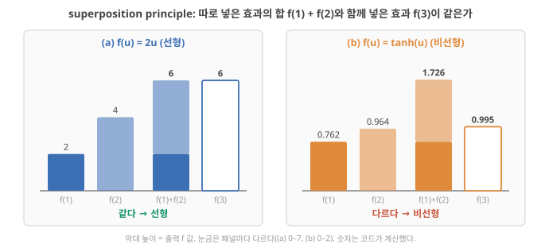
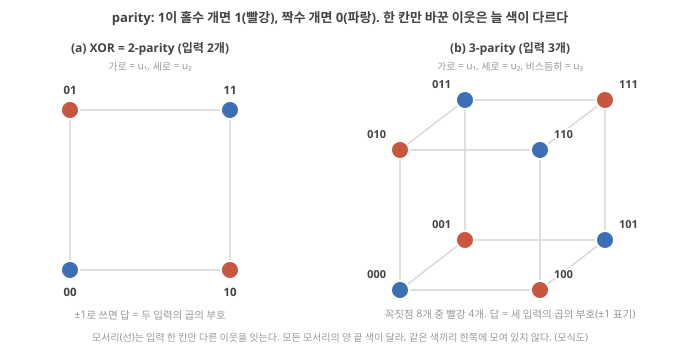
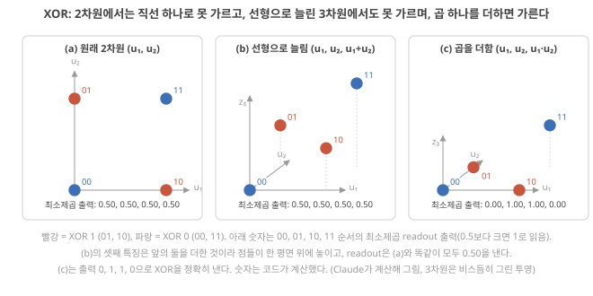
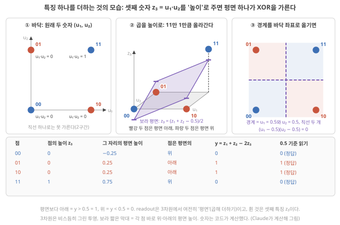
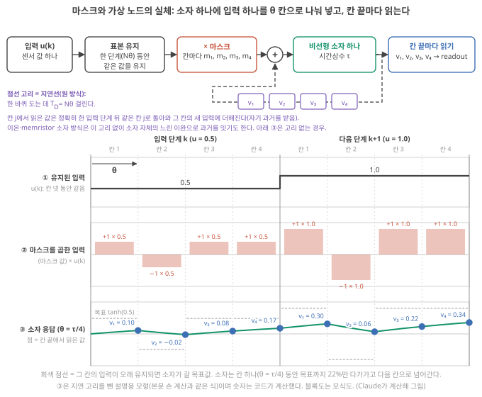
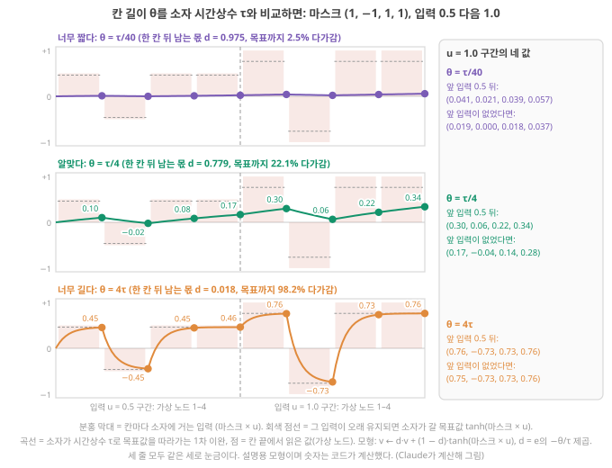
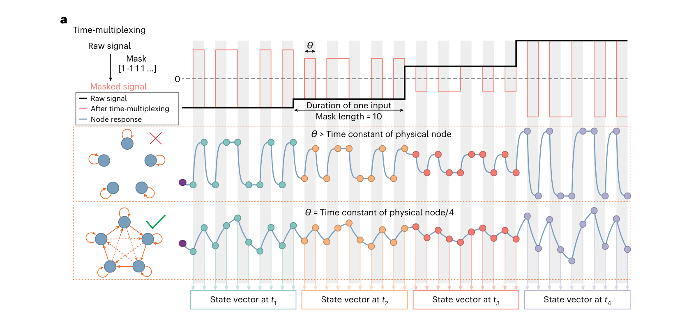
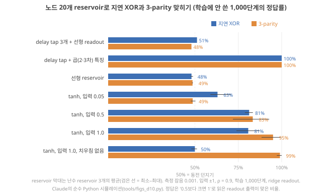
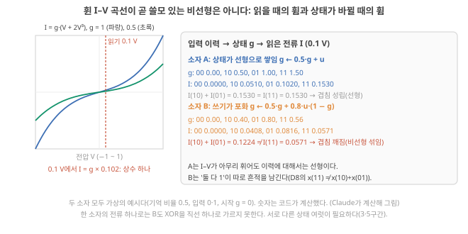
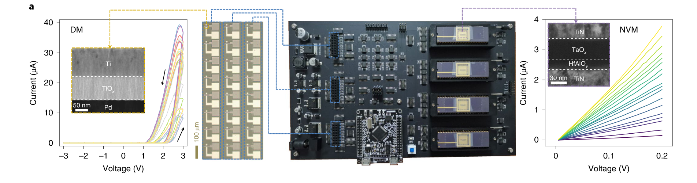

D10. 왜 nonlinearity가 필요한가? 선형계로 못 하는 계산은 무엇이고 high-dimensional mapping·separability는 왜 중요한가?
Phase 2 · RC는 왜, 어떻게 작동하는가 · 11월 2일 (월)
답에 들어가야 할 것 — XOR·parity류 과제, 선형 고차원 사상은 여전히 선형이라는 점
기본 경로: ① 사전 테스트(권장) → ② 학습자료(구간마다 잠깐 점검까지) → ③ 백지 회상 → ④ 가르치듯 내 답. ⓪·⑤와 접힌 '심화'·'추가 연습'은 선택입니다. 한 번에 끝낼 필요 없이 구간 단위로 나눠 읽어도 되고, 다시 열면 '지난번 읽던 곳' 링크가 뜹니다.
① 사전 테스트와 먼저 만들어 보기
아직 배우지 않은 내용을 먼저 풀어 봅니다. 많이 틀리는 것이 정상이고, 그게 목적입니다. 먼저 답해 본 문제는 읽을 때 눈에 들어오고 더 오래 남습니다. 문제마다 정답만 보이고, 이유는 학습자료와 ⑤ 다시 풀기에서 봅니다. 다 풀면 학습자료가 열립니다. 건너뛰려면 학습자료 위의 '그냥 읽기'를 누르세요(권장 단계일 뿐 필수는 아닙니다).
② 학습자료
D8에서 노드 두 개 reservoir가 "두 입력이 서로 다른가"(XOR)라는 질문에는 직선 하나로 답하지 못하는 것을 보았고, D9에서는 기억이 왜 필요하고 어떻게 흐려지는지를 보았습니다. 오늘은 reservoir의 다른 한 축, 비선형성입니다. 기억만 있고 비선형이 없으면 무엇을 못 하는지, 차원을 늘린다는 말이 왜 비선형과 함께여야 하는지, 그리고 이온 소자의 휜 전류–전압 곡선이 그 비선형성을 주는지를 숫자로 따라갑니다.
- 선형과 비선형은 정확히 무엇이 다른가? (겹침 원리)
- 선형 readout으로 못 푸는 과제는 무엇인가? (XOR, parity를 손으로)
- "고차원으로 사상한다"는 말은 왜 비선형이어야 뜻이 있나? (선형으로 늘린 차원은 여전히 선형)
- 입력 하나를 여러 노드로 퍼뜨리는 방법: 입력 마스크와, 소자 하나를 시간으로 나눠 쓰는 시간다중화
- 실제 reservoir로 XOR을 풀면? 어떤 비선형이 필요한가?
- 소자의 I–V 비선형성은 그 자체로 쓸모 있는 비선형성인가?
1. 선형과 비선형: 겹침 원리
이 구간을 읽고 나면 "선형 = 겹침 원리가 성립한다"를 숫자로 확인하고, 선형 reservoir의 readout은 결국 지난 입력들의 가중합이라서 지연 탭 기준선과 같은 일밖에 못 한다는 것을 시뮬레이션 숫자(NMSE 0.144 대 0.146)로 말할 수 있다.
선형 함수와 비선형 함수: 겹침 원리가 깨지는 것
왜 필요한가. "비선형이 필요하다"는 말을 하려면 선형이 무엇인지부터 정확해야 합니다. 그래프가 직선이냐 곡선이냐로 구별하는 것은 입력이 하나일 때만 통합니다. 입력이 여럿이고 시간에 따라 들어오면 다른 기준이 필요합니다.
정의(겹침 원리, superposition). 함수 \(f\)가 다음 두 가지를 만족하면 선형입니다.
- 더한 것의 결과 = 결과의 합: \(f(a + b) = f(a) + f(b)\)
- 배수의 결과 = 결과의 배수: \(f(c \cdot a) = c \cdot f(a)\)
숫자로. \(f(u) = 2u\): \(f(1) + f(2) = 2 + 4 = 6\), \(f(1 + 2) = f(3) = 6\). 같습니다. 선형입니다. \(f(u) = u^2\): \(f(1) + f(2) = 1 + 4 = 5\), \(f(3) = 9\). 다릅니다. 비선형입니다. \(\tanh\): \(\tanh(1) + \tanh(2) = 0.762 + 0.964 = 1.726\), \(\tanh(3) = 0.995\). 다릅니다. 비선형입니다. 둘을 따로 넣은 효과의 합과 함께 넣은 효과가 다르면, 그 차이가 "함께 있었다"는 정보이고 이것이 비선형의 쓸모입니다. D8 3구간의 \(x(10) + x(01) \neq x(11)\)이 바로 이것이었습니다.

상수 하나는 봐준다. readout \(y = w_0 + w_1 x_1 + \cdots\)처럼 상수 \(w_0\)가 붙은 함수는 엄밀히는 겹침 원리를 어기지만(입력 0에서 0이 아님), 차이를 보면 겹침이 성립하므로 이 교재에서는 "선형(곱해 더하기 + 상수)"으로 함께 부릅니다. 오늘의 결론은 상수가 있든 없든 같습니다.
시간이 있으면. 함수의 입력이 "입력의 이력 전체"일 때도 같은 기준을 씁니다. 이력 A를 넣은 결과와 이력 B를 넣은 결과의 합이, A와 B를 더한 이력을 넣은 결과와 같으면 선형입니다.
선형 reservoir가 하는 일. D8의 갱신식에서 \(\tanh\)를 빼면 \(x(t+1) = W x(t) + W_{in} u(t)\)입니다(D8 기초: 상태 갱신식). 처음 상태를 \(x(0) = 0\)으로 두고 한 단계씩 넣어 봅니다(\(W^2\)는 표 \(W\)를 두 번 곱한다는 뜻).
- \(x(1) = W_{in} u(0)\)
- \(x(2) = W x(1) + W_{in} u(1) = W W_{in} u(0) + W_{in} u(1)\)
- \(x(3) = W x(2) + W_{in} u(2) = W^2 W_{in} u(0) + W W_{in} u(1) + W_{in} u(2)\)
한 단계가 지날 때마다 앞의 항들에 \(W\)가 하나씩 더 곱해질 뿐, 입력끼리 곱해지는 일은 한 번도 없습니다. 같은 규칙으로 계속 펼치면
\[ x(t) = W_{in} u(t-1) + W W_{in} u(t-2) + W^2 W_{in} u(t-3) + \cdots \]
즉 지난 입력들에 정해진 벡터(\(W_{in}\), \(W W_{in}\), …)를 곱해 더한 것입니다. readout은 여기에 다시 가중치를 곱해 더하므로, 최종 출력은
\[ y(t) = c_1 u(t-1) + c_2 u(t-2) + c_3 u(t-3) + \cdots \]
처럼 지난 입력들의 가중합일 수밖에 없습니다(\(c_k\)는 readout과 \(W\)로 정해지는 숫자). D9의 노드 하나짜리 식 \(x(t) = u(t-1) + d\,u(t-2) + \cdots\)(D9 기초: fading memory)에서 숫자 \(d\) 자리에 표 \(W\)가 들어간 꼴입니다. 노드가 200개든 2,000개든, 선형 reservoir + 선형 readout이 할 수 있는 것은 "지난 입력에 숫자를 곱해 더하기"뿐입니다. 이것은 지난 입력을 그대로 저장해 넣는 지연 탭 + 선형 회귀 기준선(D9 1구간, D12)과 같은 종류의 계산입니다. 해석
시뮬레이션으로 확인. D12에서 돌릴 tools/esn.py의 결과입니다(Claude가 돌린 시뮬레이션, reservoir 난수 3개 평균). NARMA10이라는 비선형 시계열 과제(D12에서 설명; 지금은 "지난 입력들의 곱이 필요한 과제"로만 읽으세요)의 오차 NMSE(0이면 완벽, 1이면 평균값만 찍는 것과 같음)입니다. 표의 특징 수는 readout이 곱해 더하는 숫자의 개수입니다(지연 탭 50개 + 상수 1 = 51, 노드 200개 + 지금 입력 + 상수 = 202).
| 방법 | 특징 수 | NARMA10 NMSE |
|---|---|---|
| 지연 탭 50개 + 선형 readout (reservoir 없음) | 51 | 0.146 |
| 선형 reservoir 200노드 + 선형 readout | 202 | 0.144 |
| tanh reservoir 200노드 + 선형 readout | 202 | 0.053 |
선형 reservoir는 노드가 200개인데도 지연 탭 50개와 거의 같은 성적입니다. 지난 입력의 가중합 이상을 못 하기 때문입니다. 같은 노드 수에 \(\tanh\)만 넣으면 오차가 3분의 1로 줄어듭니다.
물리에서는. 옴의 법칙(\(I = GV\), 전도도 \(G\)가 고정이면 전류는 전압에 비례. 여기서 \(G\)는 소자 하나 전체의 전도도(컨덕턴스, 단위 S)이고, 재료의 성질인 이온전도도 \(\sigma\) [S/m]와는 다릅니다. 두께 \(L\), 면적 \(A\)인 막이면 \(G = \sigma A/L\)), 저항–커패시터(전하를 담는 그릇, D4 기초) 회로의 충·방전, 묽은 용액에서 농도가 확산 방정식을 따를 때의 퍼짐은 모두 입력에 대해 선형입니다. 이런 과정은 D9의 기억(흐려지는 흔적)은 줄 수 있지만, 그것만으로는 오늘의 비선형을 주지 못합니다. 다이오드의 정류(전기 정류: 한 방향으로 전류가 더 잘 흐르는 성질. 증류탑의 정류와 다른 말), 포화, 문턱, 농도에 따라 바뀌는 이동도(운반자가 단위 전기장마다 얼마나 빨리 움직이는지를 나타내는 값, 정식 설명은 D19) 같은 것이 비선형의 후보입니다. 해석
- 선형 = 겹침 원리: \(f(a+b) = f(a)+f(b)\), \(f(ca) = cf(a)\). \(2u\)는 선형, \(u^2\)·\(\tanh\)는 비선형(\(\tanh 1 + \tanh 2 = 1.726 \neq \tanh 3 = 0.995\)).
- 선형 reservoir + 선형 readout의 출력은 지난 입력들의 가중합뿐 → 지연 탭 기준선과 같은 일.
- 시뮬레이션: 선형 reservoir 200노드 0.144 ≈ 지연 탭 50개 0.146, tanh reservoir 0.053(Claude의 시뮬레이션).
2. 선형 readout으로 못 푸는 과제: XOR과 parity
이 구간을 읽고 나면 XOR을 직선 하나로 가를 수 없다는 것을 부등식 네 줄로 증명하고, 3-parity가 "세 입력의 곱"에 해당하는 더 높은 차수의 과제라는 것을 말할 수 있다.
XOR·parity: 선형 readout으로 못 푸는 과제
XOR(배타적 논리합). 두 입력 \(u_1, u_2\)(각각 0 또는 1)가 서로 다를 때만 1을 냅니다.
| \(u_1\) | \(u_2\) | XOR |
|---|---|---|
| 0 | 0 | 0 |
| 0 | 1 | 1 |
| 1 | 0 | 1 |
| 1 | 1 | 0 |
직선으로 못 가르는 이유(손으로 증명). 선형 readout \(y = w_1 u_1 + w_2 u_2 + b\)를 "0.5보다 크면 1"로 읽는다고 합시다. 네 줄이 모두 맞으려면
- (0, 0) → 0: \(b < 0.5\)
- (0, 1) → 1: \(w_2 + b > 0.5\)
- (1, 0) → 1: \(w_1 + b > 0.5\)
- (1, 1) → 0: \(w_1 + w_2 + b < 0.5\)
2와 3을 더하면 \(w_1 + w_2 + 2b > 1\). 1과 4를 더하면 \(w_1 + w_2 + 2b < 1\). 같은 양이 1보다 크면서 작을 수는 없습니다. 그러니 어떤 \(w_1, w_2, b\)로도 네 줄을 다 맞힐 수 없습니다. 평면 그림으로 말하면, 1인 두 점(01, 10)과 0인 두 점(00, 11)이 대각선으로 엇갈려 있어 직선 하나로 나눌 수 없습니다(아래 그림 2 왼쪽). D8에서 본 것처럼 readout의 경계 \(w_1 u_1 + w_2 u_2 + b = 0.5\)는 1차식이라 평면에서 직선이고, D8은 같은 결론을 "두 대각선이 한 점에서 만나므로 그 점이 양쪽에 동시에 있을 수 없다"는 그림 논리로 보였습니다(D8 3구간). 위 부등식은 그 결론을 계산으로 확인한 것입니다. 이렇게 직선(차원이 높으면 평면, 초평면) 하나로 두 무리를 가를 수 있는 경우를 선형 분리 가능(linearly separable)하다고 하고, XOR은 그렇지 않은 가장 작은 예입니다.
곱으로 보면. 입력을 0·1 대신 −1·+1로 적으면(0 → −1, 1 → +1), "둘이 같다"는 \(u_1 \times u_2 = +1\), "둘이 다르다"는 \(u_1 \times u_2 = -1\)입니다. XOR은 두 입력의 곱의 부호입니다. 가중합(\(w_1 u_1 + w_2 u_2\))으로는 곱을 만들 수 없으니 선형 readout이 못 하는 것입니다.
parity(홀짝). 입력 여러 개 중 1이 홀수 개면 1을 냅니다. 2개짜리 parity가 XOR이고, 3-parity는 세 입력의 곱(\(u_1 u_2 u_3\), ±1 표기)의 부호입니다. 입력이 하나 늘 때마다 곱의 차수(곱해지는 입력의 개수)가 하나 늘어, 더 높은 차수의 비선형이 필요합니다. D11에서 이 "차수"가 정보처리용량(지금 상태에서 readout이 여러 목표 신호를 각각 얼마나 되살리는지를 0~1 점수로 재어 더한 값. D9의 MC를 곱 같은 비선형 목표까지 넓힌 것)을 나누는 기준이 됩니다.

시간 판(지연 XOR). reservoir 과제로 쓸 때는 시간에 펼칩니다. "한 단계 전 입력과 두 단계 전 입력이 다른가?" \(y(t) = u(t-1) \oplus u(t-2)\)(\(\oplus\)는 XOR). 기억(D9)과 비선형이 둘 다 있어야 풀 수 있는, 가장 작은 시계열 과제입니다.
Liang은 2003년에 물리 영역의 liquid state machine이 XOR과 음성 인식 문제를 푸는 데 쓰였다고 소개하고 Liang 2024, p.194, 물리 노드는 입출력 사이에 비선형 함수를 제공해야 하며 그렇지 않으면 물리 RC는 선형 분리 가능한 문제만 풀 수 있다, 나머지 네트워크(readout)가 보통 선형이기 때문이라고 씁니다. Liang 2024, p.197 오늘의 증명이 그 문장의 이유입니다.
3-parity를 0·1로 쓰면 (1, 1, 0)의 답은 무엇일까요? ±1로 바꾸면 세 입력의 곱은 얼마일까요? 아래 점검에서 확인하세요.
- XOR: 서로 다를 때만 1. 부등식 2+3과 1+4가 \(w_1 + w_2 + 2b\)를 1보다 크면서 작게 만들어 모순 → 선형 분리 불가.
- ±1 표기에서 XOR = 두 입력의 곱, 3-parity = 세 입력의 곱. 차수가 높을수록 더 높은 차수의 비선형이 필요하다.
- 물리 노드가 비선형이 아니면 물리 RC는 선형 분리 가능한 문제만 푼다 Liang 2024, p.197.
3. 고차원 사상과 선형 분리: 선형으로 늘린 차원은 여전히 선형
이 구간을 읽고 나면 XOR의 네 점을 (a) 그대로, (b) 선형으로 늘린 3차원, (c) 곱을 더한 3차원에 놓고 각각 최소제곱 readout의 출력(0.50 넷 / 0.50 넷 / 0, 1, 1, 0)을 설명하고, 곱 특징이 점 11을 들어 올려 평면 하나로 가르게 되는 과정을 따라가며, "고차원 사상"이 비선형일 때만 분리를 돕는 이유를 말할 수 있다.
선형 분리와 고차원 사상 (선형 사상은 차원을 늘려도 여전히 선형)
고차원 사상. 입력 \((u_1, u_2)\)를 숫자 여러 개짜리 목록 \((z_1, z_2, z_3, \dots)\)으로 바꾸는 것을 사상(mapping, 옮겨 적기)이라 하고, 목록이 원래보다 길면 고차원 사상이라고 합니다. reservoir의 상태 \(N\)개가 입력의 고차원 사상입니다(D8).
특징 하나를 더한다는 것. readout이 곱해 더하는 숫자 하나하나를 특징(feature)이라고 부릅니다(1구간 표의 '특징 수'). 특징이 두 개면 각 입력은 평면 위의 점입니다. 특징을 하나 더하면 점마다 좌표가 하나 늘어, 점이 바닥에서 위로 들어 올려집니다. 새 숫자가 그 점의 '높이'가 되는 것입니다. 3차원에서 readout의 경계 \(w_0 + w_1 z_1 + w_2 z_2 + w_3 z_3 = 0.5\)는 여전히 1차식이라, 직선이 한 차원 올라간 평면입니다. 그러니 질문은 하나입니다. 점들을 들어 올린 뒤, 평면 하나로 빨강과 파랑을 가를 수 있나? 같은 네 점을 세 가지로 옮겨 적어 봅니다(그림 3). readout은 D8의 최소제곱으로 맞춥니다. 네 점에서 (출력 − 정답)²의 합이 가장 작아지도록 가중치를 고르는 방법입니다(D8 기초: 최소제곱과 ridge).

(a) 그대로 두면. 2구간에서 본 대로 직선 하나로는 못 가르고, 최소제곱 readout은 네 점 모두에 0.50을 냅니다. \(u_1\) 쪽으로 기울이면(\(w_1\)을 키우면) 정답이 1인 10과 정답이 0인 11의 출력이 함께 올라가, 하나가 좋아지는 만큼 하나가 나빠집니다. \(u_2\) 쪽도 마찬가지(01과 11)입니다. 그래서 기울이지 않고 정답의 평균 0.5를 내는 것이 오차 제곱합이 가장 작습니다(가장 덜 틀리는 답이 "모르겠다"인 것).
(b) 선형으로 늘리면. \(z = (u_1, u_2, u_1 + u_2)\)처럼 셋째 숫자를 앞의 둘을 더해 만들면 차원은 3이 됩니다. 그런데 readout은
\[ w_1 z_1 + w_2 z_2 + w_3 z_3 = w_1 u_1 + w_2 u_2 + w_3(u_1 + u_2) = (w_1 + w_3)\,u_1 + (w_2 + w_3)\,u_2 \]
로, 결국 원래 두 입력의 가중합입니다. XOR 네 점은 들어 올려지기는 하지만 모두 \(z_3 = z_1 + z_2\)라는 비스듬한 평면 위에 놓이고(그림 3b), 그 평면 위에서 가르는 문제는 (a)와 똑같습니다. 최소제곱 readout은 (a)와 똑같이 네 점 모두에 0.50을 냅니다. 일반적으로 새 숫자들이 모두 \(u_1, u_2\)의 가중합이면(행렬 \(A\)를 곱한 것, \(z = Au\). 위 예는 \(A\)의 세 행이 (1, 0), (0, 1), (1, 1)인 경우), readout의 가중합을 풀어 \(u_1\)끼리, \(u_2\)끼리 모으면 계수만 바뀐 \(u_1\), \(u_2\)의 가중합이 됩니다. 기호로 쓰면 \(w \cdot z = (A^{\mathsf T} w) \cdot u\)입니다(\(A^{\mathsf T}\)는 \(A\)의 행과 열을 바꾼 표로, 위에서 계수를 모은 계산을 한꺼번에 적은 것). 그래서 선형 사상은 몇 차원으로 늘려도 readout 입장에서는 원래 입력의 선형 함수입니다.
(c) 비선형으로 늘리면. \(z = (u_1, u_2, u_1 \cdot u_2)\)처럼 셋째 숫자를 곱으로 만들면, 네 점은 (0,0,0), (0,1,0), (1,0,0), (1,1,1)이 됩니다. readout \(y = z_1 + z_2 - 2 z_3\)을 계산하면 00 → 0, 01 → 1, 10 → 1, 11 → \(1 + 1 - 2 = 0\). XOR이 정확히 나옵니다. 최소제곱도 이 답(0, 1, 1, 0)을 찾습니다. 3차원에서 평면 하나가 두 무리를 가른 것인데, 그 평면이 어디에 있고 점들이 어느 쪽에 있는지 한 단계씩 따라가 봅니다(그림 4).

단계 1 — 새 특징을 계산한다. \(z_3 = u_1 \times u_2\): 00 → 0, 01 → 0, 10 → 0, 11 → 1. 넷 중 11만 0이 아닙니다.
단계 2 — 높이로 읽는다. \(z_3\)를 높이로 그리면 00, 01, 10은 바닥에 그대로 있고 11만 높이 1로 들어 올려집니다(그림 4 ②). 2차원에서 대각선으로 엇갈려 있던 파랑 둘(00, 11) 가운데 하나가 위로 빠져나온 것입니다.
단계 3 — 평면을 찾는다. readout \(y = z_1 + z_2 - 2z_3\)를 0.5 기준으로 읽으면, 경계는 \(z_1 + z_2 - 2z_3 = 0.5\)입니다. 높이 \(z_3\)에 대해 풀면 \(z_3 = (z_1 + z_2 - 0.5)/2\), 곧 기울어진 평면입니다. 네 자리에서 이 평면의 높이를 재면 00 자리 −0.25, 01·10 자리 0.25, 11 자리 0.75입니다.
단계 4 — 점은 평면의 위인가 아래인가. 00: 점 높이 0 > 평면 −0.25(위). 01·10: 0 < 0.25(아래). 11: 1 > 0.75(위). 평면보다 아래이면 \(y > 0.5\)라 1, 위이면 0으로 읽으니 결과는 0, 1, 1, 0, 곧 XOR입니다(그림 4의 표). 11이 들어 올려지지 않았다면(높이 0) 평면 높이 0.75보다 아래라 1로 잘못 읽혔을 것입니다. 들어 올림 하나가 11을 평면의 반대쪽으로 넘겨 준 것입니다.
단계 5 — 경계를 바닥 좌표로 옮긴다. 경계 \(z_1 + z_2 - 2z_3 = 0.5\)에 \(z_1 = u_1\), \(z_2 = u_2\), \(z_3 = u_1 u_2\)를 넣으면 \(u_1 + u_2 - 2u_1 u_2 = 0.5\)입니다. 0.5를 왼쪽으로 옮겨 정리하면 \(-2(u_1 - 0.5)(u_2 - 0.5) = 0\)(괄호를 풀면 원래 식이 됩니다), 곧 \(u_1 = 0.5\) 또는 \(u_2 = 0.5\). 바닥에서 보면 경계는 직선 두 개가 만든 십자이고, 01과 10은 서로 마주 보는 두 칸, 00과 11은 나머지 두 칸에 들어갑니다(그림 4 ③). 바닥의 직선 하나로는 못 하던 가르기를 3차원의 평면 하나가 해낸 것입니다. readout은 여전히 '곱해 더하기'(3차원의 평면)이고, 굽힘은 전부 새 특징 \(z_3\)에서 왔습니다.
정리. 차원을 늘리는 것 자체가 아니라, 새 차원이 기존 숫자들의 가중합이 아닌 것(비선형 조합)이어야 분리가 쉬워집니다. 서로 가중합 관계가 없는 숫자 \(N\)개를 "선형 독립"이라고 부르는데, D8 4구간의 "거의 같은 노드 둘"은 이 조건을 거의 어긴 경우였고, D11에서 이것이 용량의 상한이 됩니다.
커널: 특징을 직접 만들지 않고 같은 효과를 내는 요령. 아래 영상 제목의 SVM(서포트 벡터 머신, support vector machine)은 두 무리 사이에 여유가 가장 넓은 직선(평면)을 긋도록 학습하는 선형 분류기입니다. 경계가 직선(평면)이라는 점은 readout과 같습니다. 커널(kernel)은 새 특징 목록을 하나하나 만들어 저장하지 않고, 두 점의 늘린 특징 목록끼리 곱해 더한 값만 바로 계산하는 요령입니다. 예를 들어 두 점 \(a = (a_1, a_2)\), \(b = (b_1, b_2)\)에 대해 다항식 커널 \((a_1 b_1 + a_2 b_2)^2\)을 전개하면 \(a_1^2 b_1^2 + a_2^2 b_2^2 + 2 a_1 a_2 b_1 b_2\)입니다. 이것은 각 점의 특징을 \((a_1^2,\ a_2^2,\ \sqrt{2}\,a_1 a_2)\)처럼 늘린 뒤 두 목록을 곱해 더한 것과 같고, 그 안에 두 좌표의 곱 특징(XOR 예의 \(u_1 u_2\)와 같은 꼴)이 들어 있습니다. [해석: 기계학습 교재의 표준 내용이며 폴더 원문과는 대조하지 않음] reservoir에서는 이 늘리기를 계산 요령 대신 물리 동역학이 하고, 아래에 나오는 'kernel quality'의 kernel도 이 비유를 빌린 말로 볼 수 있습니다. 해석
reservoir에서는. reservoir가 상태를 일부러 \(u_1 u_2\)처럼 만들어 주지는 않습니다. \(\tanh\)가 입력들을 섞어 굽히는 과정에서 곱과 비슷한 성분들이 여러 노드에 조금씩, 서로 다른 비율로 섞여 들어가고, readout이 그것들을 골라 더합니다(D8 3구간의 "둘 다 1"의 흔적). Stepney는 난수 가중치가 입력을 고차원 공간으로 무작위 사상하고, 그래서 학습한 선형 출력으로 원하는 분리를 이룰 수 있다고 씁니다. Stepney 2024, p.668 그리고 reservoir의 계산 용량은 관측 가능한 노드 수가 정한다며, 선형 출력층이 서로 다른 입력 부류를 가를 수 있도록 충분한 차원이 관측 가능해야 한다고 씁니다. Stepney 2024, p.673 Liang은 이상적인 물리 RC라면 노드 상태들이 고차원 공간에서 선형 분리 가능하게 될 것이라며, 이를 재는 지표로 kernel quality(서로 다른 입력열이 끝에 남긴 상태들을 모은 표의 계수(rank), 즉 그 상태들 가운데 서로의 가중합이 아닌 것이 몇 개인가)를 소개합니다. Liang 2024, p.200 (kernel quality는 D14에서 다룹니다.)
"노드(전극, 측정 채널)를 많이 늘리면 고차원이니까 분리가 잘 된다" — 늘린 숫자들이 서로의 가중합(그림 3b)이거나 같은 것을 거의 그대로 반복하면, 차원 수는 늘어도 readout이 쓸 수 있는 정보는 늘지 않습니다. 필요한 것은 "서로 다른 비선형 조합"이 늘어나는 것입니다. Singh 2026은 전극이 많다고 reservoir가 계산적으로 풍부한 것이 아니며, 중요한 것은 readout이 실제로 관측할 수 있는 재현 가능하고 서로 중복되지 않는 국소 응답이라고 씁니다. Singh 2026, p.5
- 선형 사상 \(z = Au\)는 차원을 늘려도 readout에게는 \(u\)의 선형 함수: \(w \cdot z = (A^{\mathsf T}w)\cdot u\). XOR에서 (a)와 (b) 모두 출력 0.50 넷.
- 곱 하나(\(u_1 u_2\))를 더한 (c)는 \(z_1 + z_2 - 2z_3\)으로 XOR을 정확히 낸다.
- 분리를 돕는 것은 차원 수가 아니라 서로 다른 비선형 조합. 관측 가능한 차원이 충분해야 한다 Stepney 2024, p.673, 이상적인 상태는 고차원에서 선형 분리 가능하다 Liang 2024, p.200, 채널 수 ≠ 풍부함 Singh 2026, p.5.
4. 입력 마스크와 시간다중화: 노드를 늘리는 두 방법
이 구간을 읽고 나면 입력 마스크가 "입력 하나에 노드마다 다른 무게를 곱해 퍼뜨리는 것"(ESN의 \(W_{in}\)과 같음)임을 말하고, 소자 하나에 입력 하나를 θ 칸으로 나눠 걸고 칸 끝마다 읽는 시간선을 그려 마스크 (1, −1, 1, 1)의 가상 노드 네 개 값을 손으로 계산하며, 시간 간격 θ와 소자 시간상수 τ의 관계(θ ≈ τ/4)가 왜 중요한지 숫자로 설명할 수 있다.
3구간의 결론은 "서로 다른 비선형 조합이 여럿 필요하다"였습니다. 그런데 이온 소자 하나는 전극 두 개에 전류 하나를 냅니다. 숫자 하나입니다. 입력도 대개 숫자 하나(센서 값)입니다. 숫자 하나에서 어떻게 서로 다른 상태 수십 개를 만드나? 두 가지 방법이 있고, 둘 다 마스크에서 시작합니다.
입력 마스크: 입력 하나를 여러 무게로 퍼뜨리기
왜 필요한가. 입력 \(u(t)\) 하나를 노드 \(N\)개에 똑같이 넣고 노드들의 성질도 같다면, 노드 \(N\)개는 같은 값을 냅니다. D8 4구간의 "거의 같은 노드"가 \(N\)개인 셈이고, 노드 하나와 다를 바 없습니다. 노드마다 입력을 다른 무게로 받아야 서로 다른 상태가 생깁니다.
무엇인가. 노드 \(i\)에 들어가는 입력을 \(m_i \times u(t)\)로 정하는 숫자 목록 \((m_1, m_2, \dots, m_N)\)을 마스크(mask)라고 부릅니다. 보통 난수로 한 번 정하고 고정합니다(+1과 −1을 무작위로, 또는 −1~1의 난수). 사실 이것은 D8의 \(W_{in}\)과 같은 것입니다. Stepney는 마스크가 "입력 가중치 행렬을, ESN처럼 공간으로 퍼뜨리는 대신 시간으로 퍼뜨리는 장치로 다시 읽은 것일 뿐"이라고 씁니다. Stepney 2024, p.671
회로에서는. Zhong 2022의 memristor(지나간 전압·전류에 따라 저항이 바뀌는 2단자 소자) reservoir는 증폭한 입력과 그 부호를 뒤집은 신호를 다중화기(MUX: 여러 입력선 가운데 하나를 골라 내보내는 전자 스위치)에 연결하고, 펄스 폭 δ의 마스크 순서에 따라 둘 중 하나를 골라 보냅니다. 거기에 입력 바이어스 전압 \(B_i\)를 더해 소자에 겁니다. Zhong 2022, p.674 마스크 +1은 '원래 신호를 고른다', −1은 '뒤집은 신호를 고른다'는 스위치 순서인 셈이고, δ는 아래 시간다중화의 칸 길이 θ, \(B_i\)는 아래 '어디서 깨지나'의 치우침에 해당합니다. 해석
작은 숫자로. 입력 \(u = 0.5\), 마스크 \((1.0, -0.6, 0.3, 0.8)\)이면 노드 넷은 각각 0.5, −0.3, 0.15, 0.4를 받습니다. 각 노드가 \(\tanh\)로 굽히면 0.462, −0.291, 0.149, 0.380. 입력이 1.0으로 두 배가 되면 받는 값도 두 배(1.0, −0.6, 0.3, 0.8)지만 \(\tanh\) 뒤의 값은 0.762, −0.537, 0.291, 0.664로 두 배가 아닙니다. 받는 값이 큰 노드(0.762 < 2 × 0.462)일수록 더 많이 휘어서, 노드마다 휘는 정도가 다릅니다. 같은 입력에서 서로 다른 비선형 조합이 생기는 첫걸음입니다.
어디서 깨지나. 마스크 값이 +1과 −1뿐이고 노드가 대칭(\(\tanh(-z) = -\tanh(z)\))이며 치우침(bias: 노드마다 입력에 더해 두는 고정된 작은 상수로, 노드가 휘는 지점을 옮겨 좌우 대칭을 깨는 것)이 없으면, −1을 받은 노드는 +1을 받은 노드의 정확히 부호만 바뀐 복사본이 됩니다. 두 노드는 서로의 가중합(−1배)이라 정보가 늘지 않습니다(3구간). 그래서 마스크만으로는 부족하고, 노드의 치우침·시간 응답·서로의 연결이 다양함을 더해야 합니다(아래 시간다중화, 5구간).
실제 소자 배열의 예. Zhong 2022의 memristor RC는 1차원 시간 신호를 서로 다른 마스크(길이 5)를 거쳐 동적 memristor 노드 24개에 병렬로 넣고, 노드마다 한 시간 단계에 상태를 5개씩 읽어 시간 단계당 reservoir 상태 120개를 얻었습니다. Zhong 2022, p.675 24 × 5 = 120입니다. 소자 24개를 마스크로 다양하게 만들고, 그 각각을 다시 시간으로 5개씩 나눠 쓴 것입니다. 뒤의 "시간으로 나눠 쓰기"가 다음 기초입니다.
시간다중화와 가상 노드: 소자 하나를 시간으로 나눠 여러 노드처럼 쓰기
왜 필요한가. 소자를 수십 개 만들어 연결하는 것은 어렵습니다. 특히 젤·고분자 이온 소자는 배열로 집적하기가 실리콘보다 어렵다고 보는 것이 출발점입니다(D26). 해석 소자가 하나뿐이어도 노드 여럿의 효과를 내는 방법이 있다면 매력적입니다.
무엇인가. 입력 한 단계의 시간(예: 1 ms)을 \(N\)개의 짧은 칸(각 θ = 1/\(N\) ms)으로 나눕니다. 칸 \(j\) 동안 소자에 \(m_j \times u(t)\)를 넣습니다(마스크를 시간 순서로 적용). 그리고 각 칸이 끝날 때 소자의 출력을 읽습니다. 그러면 입력 한 단계마다 숫자 \(N\)개가 나오고, 이 \(N\)개를 노드 \(N\)개의 상태처럼 취급합니다. 이것을 시간다중화(time multiplexing), 그 \(N\)개를 가상 노드(virtual node)라고 부릅니다. Stepney는 마스크를 곱한 입력열을 입력 주파수의 \(N\)배로 reservoir에 넣고, 같은 주파수로 지연선 끝의 상태를 읽어 원래 시간 단계마다 \(N\)개의 값을 모은다고 설명합니다. Stepney 2024, p.671
생김새: 소자 하나와 시간선. 그림 5가 입력 하나가 소자를 지나가는 모습입니다. 위는 부품의 연결, 아래는 시간에 따라 무엇이 변하는지입니다.

단계 1 — 입력을 붙잡아 둔다(표본 유지). 센서 값 \(u(k) = 0.5\)(\(k\)는 입력 단계 번호. 위의 \(u(t)\)와 같은 것인데, 한 단계 안의 칸과 구별하려고 \(k\)로 씁니다)를 한 입력 단계 내내 같은 값으로 유지합니다(sample and hold). 이 단계를 칸 \(N = 4\)개로 나누고, 칸 하나의 길이를 θ라고 부릅니다(그림 5 ①).
단계 2 — 칸마다 마스크를 곱해 소자에 건다. 마스크 (1, −1, 1, 1)이면 칸 1–4에 +0.5, −0.5, +0.5, +0.5를 차례로 겁니다(그림 5 ②). 공간에 노드 넷을 두는 대신, 같은 소자 하나에 서로 다른 입력 넷을 시간 순서로 거는 것입니다. 마스크는 입력 단계가 바뀌어도 같은 순서로 되풀이됩니다. Liang 2024, p.198
단계 3 — 소자가 따라간다. 한 칸의 입력을 오래 유지하면 소자는 어떤 값에 자리 잡을 것입니다. 이 모형은 그 목표값을 \(\tanh(\text{마스크} \times u)\)로 둡니다(굽는 응답, 그림 5 ③의 회색 점선). 그러나 소자는 시간상수 τ로 천천히 움직이므로(D9의 이완), 칸 하나 동안 목표까지 다 가지 못하고 일부만 다가간 채 다음 칸을 맞습니다. 화공의 1차 공정에 계단 입력을 넣으면 시간 \(t\) 뒤 최종 변화량의 \(1 - e^{-t/\tau}\)만큼 와 있는 것과 같은 꼴입니다. θ = τ/4이면 \(1 - e^{-0.25} = 0.22\), 곧 22%입니다.
단계 4 — 칸 끝마다 한 번씩 읽는다. 칸이 끝나는 순간의 출력(예: 전류)을 하나씩 기록하면 입력 하나에 숫자 넷 \((v_1, v_2, v_3, v_4)\)가 모입니다(그림 5 ③의 파란 점). 이 넷이 가상 노드 네 개의 상태이고, readout은 D8처럼 이 넷에 가중치를 곱해 더합니다. '가상'인 이유는 따로 만든 부품이 아니라 같은 소자를 서로 다른 시각에 읽은 값이기 때문입니다.
단계 5 — 과거는 어떻게 들어오나. 원래 방식(Appeltant 2011의 delay-coupled RC)에는 지연 고리가 있습니다. 소자 출력을 한 바퀴 도는 데 \(T_D = N\theta\)가 걸리는 지연선으로 보내고, 돌아온 값을 새 입력에 더합니다. 그러면 칸 \(j\)에서 읽은 값이 정확히 한 입력 단계 뒤 같은 칸 \(j\)로 돌아와, 가상 노드 \(j\)가 자기 과거를 받습니다(D8 갱신식의 \(W x(t)\)가 하던 일). Liang은 노드 출력이 지연되어 되먹임선으로 마스크 입력에 더해지고, 지연선이 현재 입력과 이전 노드 상태를 이어 과거 정보를 보존하며 순환 신경망을 이룬다고 씁니다. Liang 2024, p.195 Stepney는 이것이 지연 경로를 따라 가상 노드 \(N\)개를 놓은 고리 모양 연결이 된다고 씁니다. Stepney 2024, p.671 원 논문은 지연 길이를 τ, 소자의 시간척도를 T로 쓰니, D9부터 τ를 소자 시간상수로 쓰는 이 교재에서는 지연 길이를 \(T_D\)로 적어 둘을 구분합니다. 한편 Zhong 2022의 memristor 회로 설명(Fig. 2b)에는 이런 되먹임 고리가 없고, 소자 자체의 짧은 기억이 과거를 잇습니다. Zhong 2022, p.674 해석 아래 손 계산도 고리가 없는 쪽입니다.
가상 노드들이 서로 다른 이유. 소자는 칸이 바뀌는 순간 바로 새 값으로 가지 못하고 시간상수 τ로 천천히 따라갑니다(D9의 이완). 그래서 칸 \(j\) 끝의 값은 "칸 \(j\)의 입력"과 "칸 \(j-1\) 끝의 값"이 섞인 것이 되고, 이웃 가상 노드가 서로 연결된 것과 같은 효과가 납니다. 한 칸 동안 남는 비율은 D9의 식 그대로 \(d = e^{-\theta/\tau}\)입니다.
손 계산(마스크 (1, −1, 1, 1), 입력 0.5). 모형: 칸마다 \(v \leftarrow d\cdot v + (1-d)\cdot\tanh(m_j \times u)\). \(\tanh(0.5) = 0.462\).
- θ = τ/4: \(d = e^{-0.25} = 0.779\), \(1-d = 0.221\). 칸마다 새로 들어오는 몫은 \(0.221 \times (\pm 0.462) = \pm 0.102\).
- \(v_1 = 0.779 \times 0 + 0.102 = 0.102\)
- \(v_2 = 0.779 \times 0.102 - 0.102 = 0.080 - 0.102 = -0.023\)
- \(v_3 = 0.779 \times (-0.023) + 0.102 = -0.018 + 0.102 = 0.085\)
- \(v_4 = 0.779 \times 0.085 + 0.102 = 0.066 + 0.102 = 0.168\)
- θ = 4τ: \(d = e^{-4} = 0.018\). 소자가 칸마다 거의 완전히 새 값으로 가서 \(v \approx \tanh(m_j u)\) = (0.454, −0.445, 0.445, 0.462). 사실상 ±0.46 두 종류뿐이고, +1 칸끼리는 거의 같은 값입니다.
다음 입력에서: 기억. 이어서 입력 1.0이 오면, θ = τ/4는 앞 입력의 흔적을 안고 시작해 (0.30, 0.06, 0.22, 0.34)이고, 앞 입력이 없었다면 (0.17, −0.04, 0.14, 0.28)이었을 것입니다. 앞 입력이 상태에 남은 것입니다. θ = 4τ는 앞 입력이 있든 없든 (0.76, −0.73, 0.73, 0.76)으로 거의 같습니다. 칸이 τ보다 너무 길면 가상 노드는 서로 비슷하고, 입력과 입력 사이의 기억도 사라집니다.
θ를 τ와 견주는 이유: 세 경우. 한 칸 동안 소자가 목표 쪽으로 움직이는 몫은 \(1 - d = 1 - e^{-\theta/\tau}\)로, θ 하나가 아니라 θ/τ의 비가 정합니다. 같은 소자라도 칸을 짧게 자르느냐 길게 자르느냐에 따라 세 가지가 됩니다(그림 6, 같은 마스크와 입력 0.5 → 1.0).
| 칸 길이 θ | 한 칸 뒤 남는 몫 \(d\) | 한 칸에 다가가는 몫 \(1-d\) | 입력 1.0 구간의 가상 노드 | 무슨 일이 생기나 |
|---|---|---|---|---|
| τ/40 | 0.975 | 2.5% | (0.041, 0.021, 0.039, 0.057) | 소자가 거의 움직이지 못한다. 앞 입력은 오래 남지만 값이 0.06 이하로 작고 이웃끼리 차이도 0.02 안팎이라, 측정 잡음에 묻히기 쉽다 |
| τ/4 | 0.779 | 22% | (0.30, 0.06, 0.22, 0.34) | 앞 칸 흔적 78% + 새 입력 22%. 이웃과 이어져 있으면서도 각자 다르고, 앞 입력도 기억한다 |
| 4τ | 0.018 | 98% | (0.76, −0.73, 0.73, 0.76) | 칸마다 목표값까지 가 버린다(포화). ±tanh(u) 두 종류뿐이고 앞 입력을 잊는다 |
θ ≈ τ/4는 "이웃 칸과 이어질 만큼 짧고, 새 입력이 뚜렷한 흔적을 남길 만큼 긴" 중간입니다. 원 논문(Appeltant 2011)도 칸 간격 θ를 소자의 시간척도 T보다 짧게(θ = 0.2T) 잡았고, 그래야 가상 노드의 상태가 이웃 가상 노드의 상태에 의존하게 된다고 씁니다(폴더 밖 논문, PubMed Central 공개본에서 Claude가 해당 문장만 대조). τ/40 줄에는 이 모형의 한계가 있습니다. 이 모형은 비선형(\(\tanh\))을 입력에 먼저 걸기 때문에 진폭이 작아도 이미 굽은 값이 들어옵니다. 실제 소자처럼 비선형이 소자 상태(진폭)에 걸린다면, 진폭이 작을 때는 굽은 곡선의 거의 곧은 부분만 쓰게 되어 비선형 자체가 약해집니다. 아래 Liang의 "작은 진폭의 좁은 선형 범위"가 이것입니다. 해석

읽는 법. 아래 원문 그림은 위 손 계산의 원본입니다. 맨 위 줄에서 검정 계단(원래 입력, 한 계단 = 입력 한 단계)과 분홍 막대(마스크 [1 −1 1 1 …]를 곱한 입력, 마스크 길이 10)를 찾으세요. 그다음 가운데 줄(θ > 소자 시간상수)과 아래 줄(θ = 시간상수/4)에서 점들이 어떻게 다른지 비교하세요. 가운데 줄의 점들은 위아래 두 값에 붙어 있고(포화), 아래 줄의 점들은 제각각입니다. 맨 아래의 "State vector at t₁, t₂, …"가 입력 한 단계마다 모은 가상 노드 열 개입니다.

Liang은 이 방법을 이렇게 정리합니다. 2011년의 delay-coupled RC에서 시간다중화는 매 시간 단계 안에서 입력에 마스크 행렬을 곱해 진동시키고, 그 신호를 비선형 물리 노드에 넣어 시간다중화 간격과 노드 시간상수를 조율해 복잡한 동역학을 만든다. 상태 벡터(가상 노드)는 노드 출력을 순서대로 샘플링해 얻는다. Liang 2024, p.194–195 그리고 경험적으로 칸 길이 θ는 물리 노드 시간상수의 약 4분의 1이며, θ가 너무 길면 다음 값이 오기 전에 포화되어 두 값에 머무는 노드 응답 때문에 상태가 풍부하지 않고, 너무 짧으면 노드가 진폭이 작은 좁은 선형 범위에서만 움직인다고 씁니다. Liang 2024, p.198 그림 6의 아래 줄(너무 김)과 위 줄(너무 짧음)이 그 두 실패입니다.
대가. 소자 하나로 가상 노드 \(N\)개를 얻는 대신, 입력을 넣고 출력을 읽는 속도가 \(N\)배 빨라야 합니다. Stepney는 이것을 이 방법의 단점으로 들며, \(N\)이 크면 구현이 어려워질 수 있다고 씁니다. Stepney 2024, p.671 Liang은 delay-coupled RC가 물리 노드를 시간다중화하므로 직렬로 동작한다는 점을 단점으로 들고, 흔한 구현에서는 되먹임과 시간다중화를 디지털(0·1의 숫자)로 해서 아날로그(연속 전압)와 디지털 사이의 변환, 즉 ADC·DAC(전압과 숫자를 서로 바꾸는 회로, D4 기초)가 필요하고, 비용을 줄이려고 4–10 bit의 저정밀 ADC·DAC를 쓸 수 있지만 그 잡음 영향은 따로 따져야 한다고 씁니다. Liang 2024, p.195 이온 소자의 τ가 ms–s라면 θ = τ/4도 ms 이상이므로, 가상 노드 \(N\)개를 쓰면 입력 한 단계가 \(N\)배 길어집니다. 실시간 과제에서는 이것이 지연 시간이 됩니다. 해석
마스크가 (1, −1, 1, 1)이고 θ = τ/4(\(d\) = 0.779)일 때, 입력이 0.5가 아니라 −0.5라면 첫 가상 노드 \(v_1\)은 얼마일까요? 아래 점검의 첫 문제는 본문 숫자의 확인, 둘째는 빈칸, 셋째는 혼자 풀기입니다.
- 입력 마스크
- 노드 \(i\)에 \(m_i \times u\)를 넣도록 정한 숫자 목록. ESN의 \(W_{in}\)과 같은 것 Stepney 2024, p.671. 노드마다 입력을 다른 무게로 받아야 서로 다른 상태가 생긴다.
- 시간다중화 / 가상 노드
- 입력 한 단계를 \(N\)칸으로 나눠 소자 하나에 마스크를 시간 순서로 적용하고, 칸마다 읽은 \(N\)개를 노드처럼 쓰는 것 / 그 \(N\)개. 대가는 입출력 속도 \(N\)배, 직렬 동작.
- θ ≈ τ/4
- 칸 길이를 소자 시간상수의 약 4분의 1로 잡는 경험칙 Liang 2024, p.198. 너무 길면 포화·망각, 너무 짧으면 작은 진폭의 선형 범위.
- delay-coupled RC
- 비선형 노드 하나 + 지연 되먹임 + 시간다중화로 만든 RC(2011년) Liang 2024, p.194–195.
- 마스크 = 입력 하나를 노드마다 다른 무게로 퍼뜨리는 숫자 목록(\(W_{in}\)). \(u\) = 0.5 → 1.0에서 tanh 값이 두 배가 아니고(0.462 → 0.762), 노드마다 휘는 정도가 다르다.
- 시간다중화: 입력 하나를 한 단계 동안 붙잡아 θ 칸으로 나누고, 칸마다 마스크 값을 곱해 소자 하나에 걸고, 칸 끝마다 읽은 값 \(N\)개가 가상 노드. 원 방식은 지연 고리(\(T_D = N\theta\))로 가상 노드마다 자기 과거를 되돌려 준다 Liang 2024, p.195.
- θ/τ가 정한다: θ = τ/4(\(d\) = 0.78)이면 (0.102, −0.023, 0.085, 0.168)처럼 제각각이고 앞 입력을 기억, θ = 4τ면 ±0.46 두 종류로 포화·망각, θ = τ/40이면 한 칸에 2.5%만 움직여 진폭이 작다 Liang 2024, p.198–199.
- 실제 예: 소자 24개 × 마스크 길이 5 = 상태 120개 Zhong 2022, p.675. 대가: 입출력 \(N\)배 속도, 직렬 동작, 변환 Stepney 2024, p.671 Liang 2024, p.195.
5. reservoir로 XOR을 풀어 보면: 어떤 비선형이 필요한가
이 구간을 읽고 나면 노드 20개 reservoir의 지연 XOR·3-parity 정답률(선형 48%, tanh 81%, 치우침 없는 tanh 50%와 99% 등)을 읽고, "비선형이면 된다"가 아니라 "과제가 요구하는 종류와 세기의 비선형이 상태에 읽을 수 있게 남아야 한다"를 말할 수 있다.
이제 2구간의 지연 XOR(\(y(t) = u(t-1) \oplus u(t-2)\))과 3-parity(\(u(t-1) \oplus u(t-2) \oplus u(t-3)\))를 실제 reservoir에 시켜 봅니다. 입력은 ±1 난수열, 노드 20개, spectral radius 0.9, 상태를 읽을 때 작은 측정 잡음(0.001)을 더했고, D8의 ridge readout을 1,000단계로 학습한 뒤 학습에 쓰지 않은 1,000단계에서 정답률을 쟀습니다. 정답률 50%는 동전 던지기 수준입니다.

읽을 것 넷. 해석
- 선형은 안 된다. 선형 reservoir(48%, 49%)는 노드가 20개인데도 지연 탭 3개 + 선형 readout(51%, 48%)과 같이 동전 던지기 수준입니다. 1구간의 결론("선형 reservoir = 지난 입력의 가중합")과 2구간의 증명("가중합으로는 곱을 못 만든다")이 그대로 나타납니다.
- 비선형의 세기가 맞아야 한다. 같은 tanh라도 입력을 0.05로 작게 넣으면 노드가 거의 직선 구간에서만 움직여 XOR 63%, 3-parity 49%에 그칩니다. 입력을 0.5–1.0으로 키우면 81%, 83–95%로 오릅니다. Liang의 "진폭이 작은 좁은 선형 범위"(4구간)와 같은 실패이고, Singh 2026이 쓸모없는 운전 영역의 하나로 든 "특징 섞임이 너무 적은 거의 선형인 영역" Singh 2026, p.5입니다.
- 비선형의 종류가 맞아야 한다. 노드에 치우침(bias)이 없는 tanh reservoir는 XOR에서 50%, 3-parity에서 99%입니다. 같은 reservoir가 쉬운 과제는 못 하고 어려운 과제는 합니다. 이유를 한 줄로: tanh는 입력 부호를 뒤집으면 출력도 그대로 뒤집히는 대칭이 있어서, 치우침이 없으면 입력열의 부호를 모두 뒤집을 때 모든 노드의 상태도 부호만 뒤집힙니다. XOR의 답은 그때 그대로라 선형 readout이 둘을 구분할 수 없고, 3-parity의 답은 함께 뒤집혀 대칭과 맞습니다. 숫자로 따라가는 설명은 아래 심화 상자에 있습니다. 요점은 "비선형이다"라는 말 하나로는 어떤 과제를 풀지 알 수 없다는 것입니다.
- readout에 곱을 직접 주면 쉽다. 지연 탭에 곱 특징(두 개씩, 세 개의 곱)을 더하면 둘 다 100%입니다. 이것이 D8 7구간과 D12의 "2차 탭 기준선"이고, reservoir가 이겨야 할 상대입니다.
심화 · 치우침 없는 tanh reservoir가 XOR은 못 하고 3-parity는 하는 이유
\(\tanh\)는 \(\tanh(-z) = -\tanh(z)\)인 홀함수입니다. 치우침이 없으면 reservoir 전체도 홀함수처럼 동작해서, 입력열의 부호를 모두 뒤집으면 모든 노드의 상태도 정확히 부호만 뒤집힙니다(\(x \to -x\)). 그러면 readout 출력 \(y = w_0 + \mathbf{w}\cdot x\)는 \(w_0 - \mathbf{w}\cdot x\)가 됩니다. 즉 어떤 이력과 그 "뒤집힌 이력"에 대한 출력은 \(w_0\)를 중심으로 대칭입니다.
- XOR(±1 표기에서 \(u_1 u_2\)의 부호)은 두 입력을 다 뒤집어도 \((-u_1)(-u_2) = u_1 u_2\)로 답이 같습니다. 답이 1인 이력이라면 그 이력과 뒤집힌 이력 모두에서 \(y > 0.5\)여야 하니 \(w_0 > 0.5\)여야 하고, 답이 0인 이력이라면 둘 다 \(y < 0.5\)여야 하니 \(w_0 < 0.5\)여야 합니다. 둘은 동시에 성립하지 못합니다. 그래서 50%.
- 3-parity(\(u_1 u_2 u_3\))는 다 뒤집으면 \((-1)^3 = -1\)배로 답도 뒤집힙니다. 홀함수 reservoir와 대칭이 맞으므로 문제가 없습니다. 그래서 99%.
노드 20개로 81%. 지연 XOR은 가장 작은 비선형 시계열 과제인데도 노드 20개 tanh reservoir는 81%에 머뭅니다. 곱 하나를 직접 준 기준선은 100%입니다. reservoir의 비선형은 "필요한 곱을 정확히 하나" 주는 것이 아니라, 많은 곱·굽힘을 조금씩 섞어 주고 readout이 그중에서 고르는 방식이라 노드가 적으면 부족합니다. 해석 노드 수와 용량의 관계가 D11의 주제입니다.
- 선형 reservoir와 선형 지연 탭은 지연 XOR·3-parity에서 동전 던지기(48–51%, 노드 20개 모형으로 한 Claude의 시뮬레이션. 이 줄부터 아래 숫자 모두 같음). 비선형이 필요하다.
- 세기: tanh 입력 0.05는 63%·49%, 0.5–1.0은 81%·83–95%. 거의 선형인 영역은 섞임이 부족하다 Singh 2026, p.5.
- 종류: 치우침 없는 tanh는 XOR 50%, 3-parity 99%(대칭 때문, Claude의 시뮬레이션). '비선형'이라는 말만으로 과제를 알 수 없다.
- 곱 특징을 readout에 직접 주면 100% → reservoir가 이겨야 할 기준선(Claude의 시뮬레이션).
6. 소자의 I–V 비선형성은 쓸모 있는 비선형성인가
이 구간을 읽고 나면 "읽기 전압을 고정하면 I–V 곡선의 휨은 상수 하나로 접힌다"를 숫자(I = g × 0.102)로 보이고, 쓸모 있는 비선형은 상태가 입력 이력에 따라 바뀌는 방식(쓰기·이완)이나 과거와 현재가 섞인 신호에 작용하는 비선형에 있어야 한다는 것, 그리고 그것을 확인하는 시험(겹침 검사, 차수별 용량, held-out)을 말할 수 있다.
이온 소자 논문에는 전류–전압(I–V) 곡선이 휘어 있다(정류, 히스테리시스(전압을 올릴 때와 내릴 때 곡선이 다른 길을 가는 것), 포화)는 그림이 거의 늘 있습니다. 그 휨이 곧 reservoir의 비선형일까요? 두 가상 소자로 따져 봅니다.
- 소자 A: 상태(전도도) \(g\)가 입력에 대해 선형으로 쌓이고 흐려진다. \(g \leftarrow 0.5\,g + u\). 그런데 I–V 곡선은 크게 휘었다: \(I = g\,(V + 2V^3)\).
- 소자 B: 상태가 포화되며 쌓인다. \(g \leftarrow 0.5\,g + 0.8\,u\,(1 - g)\). 이미 \(g\)가 크면 같은 펄스가 덜 올린다(예: 이온이 들어갈 자리가 줄어드는 경우를 흉내 낸 것).
둘 다 읽기는 0.1 V로 고정해서 합니다. 입력 이력 두 칸(00, 10, 01, 11)을 넣고 마지막에 읽은 전류를 비교합니다.
단계 1 — 읽기 전압을 고정하면. \(V = 0.1\)이면 \(V + 2V^3 = 0.1 + 0.002 = 0.102\). 그래서 소자 A의 전류는 \(I = 0.102 \times g\). I–V 곡선이 아무리 휘어도, 읽기 전압 하나에서는 상수 0.102를 곱하는 것일 뿐입니다.
단계 2 — 소자 A의 네 이력. \(g\) = 0, 0.5, 1.0, 1.5(00, 10, 01, 11). 전류 = 0, 0.051, 0.102, 0.153. 겹침 검사: \(I(10) + I(01) = 0.051 + 0.102 = 0.153 = I(11)\). 겹침 원리가 정확히 성립합니다. 이력에 대해서는 선형입니다. 그러니 이런 소자를 몇 개를 써도 선형 readout은 XOR을 못 합니다(2구간).
단계 3 — 소자 B의 네 이력. 10: 첫 펄스로 \(g = 0.8 \times 1 \times (1 - 0) = 0.8\), 다음 단계에 \(0.5 \times 0.8 = 0.40\). 01: \(g = 0.80\). 11: 첫 펄스 뒤 0.8, 둘째 펄스에서 \(0.5 \times 0.8 + 0.8 \times (1 - 0.8) = 0.40 + 0.16 = 0.56\). 전류는 0.102배: 0, 0.0408, 0.0816, 0.0571.
단계 4 — 소자 B의 겹침 검사. \(I(10) + I(01) = 0.1224 \neq I(11) = 0.0571\). 겹침이 깨졌습니다. "두 펄스가 연달아 왔다"는 사실이 따로 흔적을 남긴 것이고, D8의 \(x(11) \neq x(10) + x(01)\)과 같은 종류의 비선형입니다. 이 비선형은 I–V 곡선이 아니라 상태가 바뀌는 규칙(쓰기)에서 왔습니다.
정리. 소자 하나의 전류 하나로는 B도 XOR을 직선 하나로 가르지 못합니다(값의 순서가 0, 0.041, 0.057, 0.082라 두 무리가 엇갈림). 비선형 섞임이 있는 서로 다른 상태가 여럿 있어야 합니다(3구간, 4구간의 마스크·가상 노드, 5구간).

언제 I–V의 휨이 쓸모 있나. 해석 위 결론을 일반화하면 비선형이 쓸모 있으려면 과거(상태)와 현재(입력)가 섞인 신호에 작용해야 합니다. 세 경우로 나눌 수 있습니다.
- 쓰기·이완이 비선형(소자 B): 상태가 바뀌는 크기가 지금 상태나 입력 크기에 따라 굽는다. 포화, 문턱, 농도에 따라 바뀌는 이동, 정류.
- 소자의 입력 자리에 이미 섞인 신호가 들어가는 구조: D7에서 본 Zhong 2026의 트랜지스터 ESN은 트랜지스터의 선형 영역으로 희소 행렬 곱(가중치 곱해 더하기)을 하고, 포화 영역으로 비선형성과 진폭 제한을 준다고 씁니다. Zhong 2026, p.3 즉 소자에 들어가는 것이 이미 \(W x + W_{in} u\)(과거와 현재의 합)라서, 그 소자의 휜 전달 곡선이 D8 갱신식의 \(\tanh\) 자리를 그대로 맡습니다.
- 입력을 읽기 전압으로 넣고 상태가 그 응답을 바꾸는 구조: \(I = g(\text{과거}) \times h(V_{\text{지금}})\)이면 과거와 현재의 곱이 생깁니다. [가설: 이온 소자에서 이 구조의 효과는 확인하지 않았다]
반대로 고정된 작은 읽기 전압에서 상태를 읽기만 하는 구조라면, 읽기 I–V의 휨은 대부분 상수로 접힙니다. 그래서 논문의 휜 I–V 그림 하나는 "이 소자가 계산에 쓸모 있는 비선형을 준다"의 증거가 되지 못합니다.
실제 시스템에서 두 종류의 I–V. 아래는 4구간에서 본 Zhong 2022의 하드웨어입니다. 읽는 순서: (1) 왼쪽 DM(reservoir 노드로 쓰는 동적 memristor) 곡선이 −3–3 V에서 크게 휘고 오르내리는 길이 다른 것(히스테리시스), (2) 가운데 실제 회로 기판 사진, (3) 오른쪽 NVM(readout 가중치를 저장하는 비휘발 memristor) 곡선이 0–0.2 V의 작은 읽기 범위에서 거의 직선인 것을 차례로 봅니다.

원문은 같은 말을 이렇게 한다. Singh 2026은 비선형성을 "I–V 스윕 한 번에서 뽑은 숫자 하나"로 다루지 말고, 실제 계산에 쓰는 구동 조건에서의 운전점 의존 응답군으로 보라고 씁니다. 쓸모없는 운전 영역으로는 특징 섞임이 너무 적은 거의 선형인 영역, 반복마다 크게 흔들리는 급격한 문턱 스위칭, 동적 범위를 압축하는 포화 근처 응답을 듭니다. Singh 2026, p.5 그리고 3.2절에서 더 직접적으로 씁니다. "비선형 전기 특성만으로는 관측된 비선형성이 쓸모 있는 계산에 기여한다는 것이 확립되지 않는다. 큰 히스테리시스 고리, 뚜렷한 전달 곡선의 휨, 강한 고조파 응답(사인파 전압을 넣었을 때 그 주파수의 2배, 3배 같은 정수배 성분이 전류에 나타나는 것)은 불안정하거나 포화되었거나 과제에 맞지 않는 영역에서 생길 수 있다." 계산적 기여는 입력 이력의 비선형 함수를 측정한 reservoir 상태에서 선형 readout으로 재구성할 수 있는가로 보아야 하고, 이것이 정보처리용량이며, 전기적 비선형 측정은 메커니즘과 운전 범위를 알려 주는 보완 정보라고 정리합니다. Singh 2026, p.13 정보처리용량은 내일(D11) 숫자로 봅니다.
구별되는 상태의 실제 예. Zhong 2026은 4-bit 부호화에서 펄스 간격을 늘리면 "0,0,0,0"과 "1,0,1,0"이 만드는 응답이 서로 달라진다고 보고합니다. Zhong 2026, p.4 이것이 "서로 다른 이력 → 서로 구별되는 상태"를 소자에서 확인하는 가장 작은 형태입니다. 다만 그 차이가 선형 겹침에서 오는지 비선형 섞임에서 오는지는 소자 A/B처럼 겹침 검사를 해야 압니다. 해석
내 소자의 I–V 곡선(또는 정류 곡선)을 떠올리세요. 실제로 reservoir로 쓸 때 입력은 어떤 형태로 들어가나요(쓰기 펄스? 읽기 전압 자체?), 상태는 어떤 전압에서 읽나요? 그 조건에서 "10, 01, 11" 세 펄스 열을 넣고 \(I(10) + I(01)\)과 \(I(11)\)을 비교하는 실험 하나를 설계해 보세요. 두 값이 같으면 무엇을 뜻하고, 다르면 무엇을 뜻하나요?
- 읽기 전압을 고정하면 I–V의 휨은 상수 하나(0.1 V에서 \(I = 0.102\,g\)). 상태가 선형으로 쌓이는 소자 A는 이력에 대해 겹침이 성립한다(0.051 + 0.102 = 0.153).
- 쓰기가 포화하는 소자 B는 겹침이 깨진다(0.1224 ≠ 0.0571). 쓸모 있는 비선형은 과거와 현재가 섞인 신호에 작용해야 한다 해석.
- 휜 전기 특성만으로는 계산 기여가 확립되지 않는다. 선형 readout으로 비선형 함수를 재구성할 수 있는지(정보처리용량)를 보라 Singh 2026, p.5, 13.
- 소자 실험의 최소 확인: 겹침 검사 \(I(10)+I(01)\) vs \(I(11)\), 그리고 held-out 성능.
7. 오늘의 반론
이 구간을 읽고 나면 "비선형은 readout에서 계산하면 된다"는 반론에 대해, 그 반론이 맞는 지점과 reservoir에 남는 몫을 적을 수 있다.
가장 강한 반론은 이것입니다. "그림 7에서 곱 특징을 readout에 직접 주면 100%다. 그렇다면 비선형은 컴퓨터가 계산하면 되고, 소자는 기억(흐려지는 흔적)만 주면 충분하지 않나? 굳이 소자의 비선형에 매달릴 이유가 있나?"
이 반론은 공학적으로 일리가 있습니다. 실제로 D12에서 지연 탭 20개와 그 곱(특징 231개)을 넣은 기준선이 노드 200개 tanh reservoir보다 NARMA10에서 나았습니다(0.035 대 0.053, Claude의 시뮬레이션). 그러나 세 가지를 따져야 합니다. (1) 곱 특징의 수는 탭 수의 제곱으로 늘고(20개 → 210개, 50개 → 1,275개), 3차는 세제곱으로 늡니다. 필요한 차수와 기억 길이가 크면 readout 쪽 계산·저장 비용이 빠르게 커집니다. 해석 (2) 그 계산을 디지털로 하면 Stepney가 말한 "출력 단계에서 다른 컴퓨터가 계산을 다 하는" 경우에 가까워지고 Stepney 2024, p.667, 소자의 몫은 기억뿐이 됩니다. 그것도 하나의 정직한 설계입니다(D9의 기억 예산이 그때의 질문). (3) Singh 2026은 재료를 평가할 때 선형 readout을 기준으로 삼으라고 합니다 Singh 2026, p.18. 비선형을 readout으로 옮기면 재료의 기여는 그만큼 좁게 말해야 합니다. 어느 쪽이 나은지는 같은 정확도에서의 시스템 비용(D17)으로 판정합니다. 답은 내 몫입니다.
오늘의 총정리
자료를 덮고 아래 표를 먼저 머릿속으로 채운 뒤 펼쳐 보세요. 그다음 종합 퀴즈를 풉니다.
한 장 요약 펼치기
| 질문 | 한 줄 답 | 근거·조건 |
|---|---|---|
| 선형이란 | 겹침 원리 \(f(a+b) = f(a)+f(b)\)가 성립하는 것 | \(\tanh 1 + \tanh 2 = 1.726 \neq \tanh 3 = 0.995\) |
| 선형 reservoir는 무엇을 하나 | 지난 입력의 가중합뿐 → 지연 탭 기준선과 같은 일 | NARMA10: 선형 200노드 0.144 ≈ 지연 탭 50개 0.146, tanh 0.053(Claude의 시뮬레이션) |
| 선형 readout으로 못 하는 것 | XOR: \(w_1 + w_2 + 2b\)가 1보다 크고 작아야 하는 모순. ±1 표기에서 XOR = 곱, 3-parity = 세 곱 | 물리 노드가 선형이면 선형 분리 문제만 Liang 2024, p.197 |
| 고차원 사상 | 선형 사상은 차원을 늘려도 선형(\(w\cdot Au = (A^{\mathsf T}w)\cdot u\)). 곱 하나가 XOR을 푼다 | 그림 3: 0.50 넷 / 0.50 넷 / 0, 1, 1, 0. 그림 4: 곱을 높이로 주면 평면 하나, 바닥에서는 십자 경계 Stepney 2024, p.668, 673 |
| 마스크·시간다중화 | 입력을 노드마다 다른 무게로(\(W_{in}\)), 소자 하나를 θ 칸으로 나눠 칸 끝마다 읽은 값이 가상 노드. θ/τ가 너무 작으면 진폭이 작고, 너무 크면 포화·망각 | θ ≈ τ/4 Liang 2024, p.198; 24 × 5 = 120 Zhong 2022, p.675; 대가: 입출력 \(N\)배 Stepney 2024, p.671 |
| 어떤 비선형이 필요한가 | 과제가 요구하는 종류(짝·홀 차수)와 세기 | 치우침 없는 tanh: XOR 50%, 3-parity 99%; 입력 0.05: 63%(Claude의 시뮬레이션) |
| I–V 비선형 | 고정 읽기 전압에서는 상수로 접힌다. 쓰기·이완의 비선형이나 섞인 신호에 작용하는 비선형이어야 | 소자 A/B 겹침 검사; Singh 2026, p.5, 13 |
| 사전 테스트·먼저 만들어 보기와 달라질 점 | "I–V가 휘었으니 비선형 소자다 → reservoir에 좋다"가 아니다. "노드·전극이 많으면 고차원"도 아니다 | 그림 3b, 그림 8 |
| 오늘의 숫자 | \(I(10)+I(01) = 0.1224 \neq I(11) = 0.0571\)(소자 B) | Claude 계산 |
| 오늘의 반론 | 비선형은 readout에서 계산하면 된다 → 곱 특징 수가 차수에 따라 폭증하고, 재료의 몫이 좁아진다. 판정은 시스템 비용 | Stepney 2024, p.667 Singh 2026, p.18 |
| 모르는 것 하나 | 내 소자의 비선형은 쓰기에 있나 읽기에 있나 | 겹침 검사 실험(6구간 생각해 보기) |
내 답에 꼭 들어가야 할 것
모범 문장은 주지 않습니다. 내 답이 아래 질문에 답했는지 확인하세요.
- 선형을 "그래프가 직선"이 아니라 겹침 원리로 정의했나? 선형 reservoir가 지연 탭 기준선과 같은 일밖에 못 하는 이유를 적었나?
- XOR(또는 parity)을 선형 readout으로 못 푸는 이유를 부등식이나 그림으로 보였나?
- "고차원 사상"이 비선형일 때만 분리를 돕는다는 것을 그림 3의 (b)와 (c)(그림 4의 평면)로 설명했나? 노드·전극 수와 '독립인 비선형 조합'의 수를 구별했나?
- 마스크와 시간다중화가 무엇을 얻고(노드 수, 다양함) 무엇을 치르는지(입출력 속도, 직렬, θ와 τ의 정합) 적었나?
- 내 소자의 I–V 비선형이 쓸모 있는 비선형인지 판단하는 시험(겹침 검사, 차수별 용량, held-out)을 하나라도 적었나?
장부에 옮길 후보
- 병목 장부: (응용이 요구하는 것) 과제가 필요로 하는 비선형의 차수(곱의 개수)와 종류(짝·홀) vs (메커니즘이 허용하는 것) 소자의 쓰기·이완 규칙이 만드는 비선형 섞임. 고정 읽기 전압의 I–V 휨은 여기에 넣지 않는다.
- 병목 장부: 시간다중화로 가상 노드 \(N\)개를 얻으면 입력 한 단계가 \(N \times \theta \approx N\tau/4\)로 길어진다. 이온 소자의 τ(ms–s)와 응용의 실시간 요구(D5, D13)가 맞는가.
- 아직 모르는 것: 내 소자에서 \(I(10) + I(01)\)과 \(I(11)\)은 같은가? / 대칭 전극과 비대칭(정류) 구조가 짝·홀 차수 용량을 어떻게 바꾸나 가설.
- 용어집: 선형, 겹침 원리, 비선형, XOR, parity, 차수, 선형 분리, 고차원 사상, 선형 독립, 입력 마스크, 시간다중화, 가상 노드, θ ≈ τ/4, delay-coupled RC, 치우침(bias), 홀함수, 쓰기 비선형 vs 읽기 비선형.
- 접는 기준 후보: "내 소자의 상태가 이력에 대해 겹침 원리를 (측정 잡음 안에서) 만족하고, 비선형을 줄 다른 구조(섞인 신호를 넣는 배치)도 없다."
더 읽을거리
서지와 읽음·대조 상태는 참고문헌 페이지에 있습니다. 쪽수는 인쇄 쪽수입니다. 아래는 모두 보충이며, 오늘 본문은 이것 없이 읽히도록 썼습니다.
내가 읽은 논문 (다시 볼 곳)
- Liang 2024, Nat. Electron. 7, 193–206. p.194–195 "Delay-coupled RC"(마스크·시간다중화·가상 노드), p.197 "Physical node design" 첫 두 문단(비선형이 없으면 선형 분리 문제만), p.198 "Pre-processing techniques"(θ ≈ τ/4)와 p.199 Fig. 4a, p.200 kernel quality 문단.
폴더에 있지만 아직 읽지 않은 논문 (Claude가 일부 대조함)
- Stepney 2024, Natural Computing 23, 665–685. 3.4.2절(p.670–672): delay feedback reservoir, 마스크 = 시간으로 퍼뜨린 입력 가중치, 입출력 \(N\)배의 대가. 4.5절(p.673): 관측 가능한 차원과 선형 분리.
- Singh 2026, Adv. Mater. e74897. p.4–5(DR2: 쓸모 있는 운전 영역의 비선형), p.13(3.2절: 전기적 비선형 ≠ 계산 기여, 정보처리용량).
- Zhong 2022, Nat. Electron. 5, 672–681. p.675(마스크 길이 5 × 노드 24 = 상태 120).
- Zhong 2026, Nat. Commun. 17, 3321. p.3(선형 영역과 포화 영역의 역할), p.4(펄스 간격 부호화와 서로 다른 응답).
폴더 밖 (내용은 미확인)
- Appeltant et al. 2011, Nat. Commun. 2, 468, "Information processing using a single dynamical node as complex system". delay feedback reservoir의 원 논문으로 Stepney가 인용. 서지는 Crossref로 확인했고, 4구간에 쓴 θ = τ/N(τ = 지연 길이)·표본 유지·θ < T(θ = 0.2T)와 그 이유 문장만 PubMed Central 공개본에서 Claude가 대조했습니다. 나머지 내용은 미확인입니다.
- 절편(bias)이 있는 선형 분류기는 \(N\)차원에서 일반 위치의 점 \(N+1\)개를 어떤 라벨로든 가를 수 있다는 고전 결과(Cover 1965 등)는 폴더 밖입니다. 절편이 없어 경계가 원점을 지나야 하면 \(N\)개까지입니다. [해석: 표준 결과. 원문은 Claude가 대조하지 않음]
④ 가르치듯 내 답
후배에게 설명한다고 생각하고 오늘 질문에 답합니다. 기본은 짧은 답입니다: 3–5문장, 또는 작은 도식 하나와 한 줄 설명, 그리고 설명하다 막힌 곳 한 줄. 이것만으로 정상적인 학습입니다. 왜·어떻게, 근거와 반론까지 쓰는 긴 종합 답안은 선택입니다. 주장에 확인 해석 가설 태그를 붙이면 좋고, 확인은 원문에서 직접 본 것에만 씁니다. 몇 번이고 고쳐도 됩니다. 막히는 곳은 따로 적어 두세요.
⑤ 다시 풀기 (선택)
① 사전 테스트와 같은 문제를 이유와 함께 다시 풉니다. 사전 테스트에서 정답을 이미 봤으므로 이 점수는 이해가 늘었다는 증거가 아니라 다시 떠올리기 연습입니다. 이해 점검은 학습자료의 잠깐 점검과 종합 퀴즈에서 처음 고른 답으로 봅니다.
⑥ 학습 완료
⑦ 피드백과 꼬리질문
내 답을 저장한 뒤 Claude에게 "D10 검토해줘"라고 말하세요. 맞게 이해한 점, 핵심 오류와 근거, 고쳐야 할 인과관계, 다시 답할 질문을 이 자리에 남깁니다.